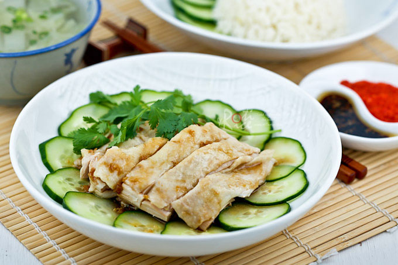

Hainanese Chicken Rice
Hainanese Chicken Rice is a perennial favorite in Malaysia. This simple yet tasty dish is enjoyed by locals as well as visitors and is a mainstay at the food courts.
The wonderful flavor of the rice and chicken combine really well with the garlic chili sauce.
Ingredients
- 1 inch ginger (peeled and smashed) (30g)
- 3 chicken leg quarters (thighs and drums attached)
- Salt and pepper
- ½ cucumber (sliced thinly into coins)
- 4 Napa cabbage leaves (sliced)
Fragrant Rice
- tbsp butter
- 2 cloves garlic (minced)
- 1 inch ginger (peeled and smashed) (30g)
- 2 cups long grain rice (rinsed and drained) (400g)
- 2½ cups water or chicken broth (600ml)
- ½ tsp salt
Garlic Chili Sauce
- 5 fresh red chilies
- 1 inch ginger (peeled)
- 3 cloves garlic
- ¼ cup rice vinegar (60ml)
- 2 tsp sugar
- ½ tsp salt
Sesame Garlic Sauce
- 2 cloves garlic (minced)
- 2 tbsp sesame oil
- 2 tbsp soy sauce
Instructions
- Bring a pot of water with ginger (enough to cover chicken by about an inch on the top) to boil.Rub chicken leg quarters with some salt and lower
them into boiling water. Bring water back up to a boil. Reduce heat to medium and allow it to simmer for 5 minutes if using electric stove or 7 minutes if using gas stove.
Turn off heat and leave chicken to poach in boiling water on the stove for 30 minutes. Do not open lid.
Fragrant Rice
- Melt butter in pot. Sauté garlic and ginger for 1 to 2 minutes. Add rice and fry for 2 to 3 minutes.
- Add 2½ cups (600ml) water and salt to pot and bring it to a boil. Reduce heat to medium and allow it to simmer until all water is absorbed, about 10 minutes. Turn heat down to the lowest setting and leave pot on for another 5 minutes.
- Turn off heat, remove pot. Allow cooked rice to sit for 10 minutes before serving. Alternatively, transfer rice to rice cooker. Add water and salt and press the cook button.
Garlic Chili Sauce
- Blend all garlic chili sauce ingredients until fine. Remove and divide into 4 small dishes. Drizzle a little soy sauce and a few drops of sesame oil onto the chili sauce. Store the remaining chili sauce in a glass jar.
Sesame Garlic Sauce
- Place garlic and sesame oil in a small microwaveable dish and microwave on high for 1½ minutes. Remove and mix in 2 tablespoon soy sauce. Set aside for now.
Plating and Serving
- Line a dinner plate with sliced cucumbers. When chicken is ready, remove and immediately submerge it in a cold bath for 2 to 3 minutes. Reserve the chicken broth for soup. Remove bones from chicken leg quarters and cut into bite size pieces. Place onto sliced cucumbers. Drizzle the prepared sesame garlic sauce over chicken.
- Skim off fat from reserved chicken broth. Discard ginger. Bring it back up to a boil. Season with salt and pepper. Add Napa cabbage and allow it cook for 2 to 3 minutes. Turn off heat. Ladle into 4 serving bowls.
- To serve, divide rice onto 4 plates. Dish a portion of chicken onto each plate. Serve immediately with garlic chili sauce and a bowl of soup for each place setting.